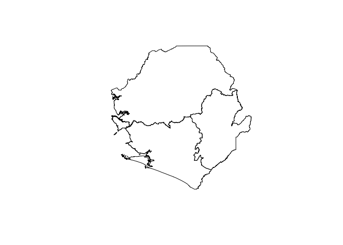
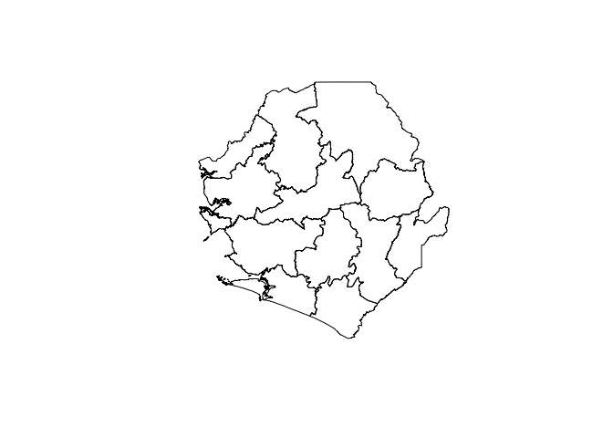
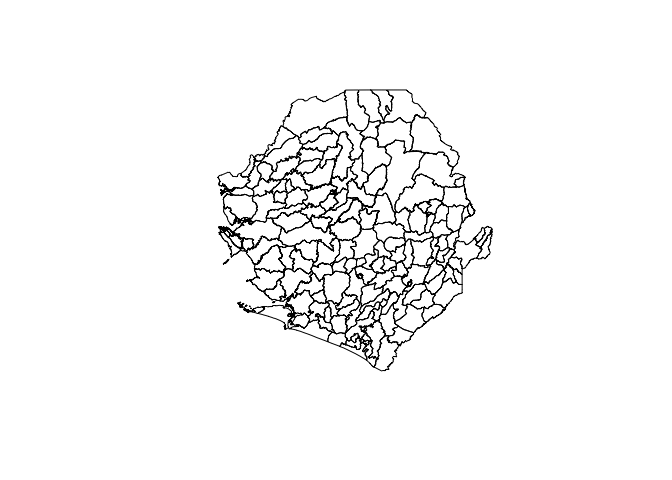
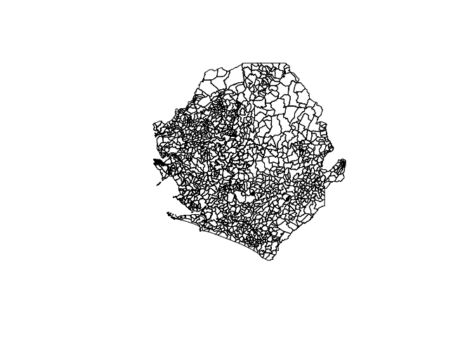

Designing surveys require relevant datasets to be used as basis for sample size calculations, sampling design, survey planning/logistics and survey implementation. These include datasets on population, lists of sampling clusters, map datasets for spatial sampling, and previous survey datasets that can be used for estimating indicator variance and design effects. This package contains relevant datasets for use in designing surveys in Sierra Leone.
Installation
The sierraleone packages is not yet released on CRAN. The development version of the package can be installed from GitHub with:
if(!require(remotes)) install.packages("remotes") remotes::install_github("spatialworks/sierraleone")
Usage
When installing sierraleone, geospatial packages on which sierraleone depends on are installed. To use sierraleone package, it will be important to load these package dependencies that have been installed. This can be done by:
Province borders
The Sierra Leone province borders SpatialPolygonsDataFrame is accessed via the province dataset.
sierraleone::province #> class : SpatialPolygonsDataFrame #> features : 4 #> extent : -13.30901, -10.27056, 6.923379, 9.999253 (xmin, xmax, ymin, ymax) #> crs : +proj=longlat +datum=WGS84 +no_defs +ellps=WGS84 +towgs84=0,0,0 #> variables : 13 #> names : OBJECTID, admin1Name, admin1Pcod, admin1RefN, admin1AltN, admin1Al_1, admin0Name, admin0Pcod, date, validOn, validTo, Shape_Leng, Shape_Area #> min values : 1, Eastern, SL01, Eastern, NA, NA, Sierra Leone, SL, 2016/08/01, 2016/10/17, NA, 1.8390606275, 0.0563871543411 #> max values : 4, Western, SL04, Western, NA, NA, Sierra Leone, SL, 2016/08/01, 2016/10/17, NA, 12.645889079, 2.96657963229
The province borders of Sierra Leone can be plotted by:
sp::plot(sierraleone::province)

District borders
The Sierra Leone district borders SpatialPolygonsDataFrame is accessed via the district dataset.
sierraleone::district #> class : SpatialPolygonsDataFrame #> features : 14 #> extent : -13.30901, -10.27056, 6.923379, 9.999253 (xmin, xmax, ymin, ymax) #> crs : +proj=longlat +datum=WGS84 +no_defs +ellps=WGS84 +towgs84=0,0,0 #> variables : 15 #> names : OBJECTID, admin2Name, admin2Pcod, admin2RefN, admin2AltN, admin2Al_1, admin1Name, admin1Pcod, admin0Name, admin0Pcod, date, validOn, ValidTo, Shape_Leng, Shape_Area #> min values : 1, Bo, SL0101, Bo, NA, NA, Eastern, SL01, Sierra Leone, SL, 2016/08/01, 2016/10/17, NA, 0.738326560804, 0.00606880539992 #> max values : 9, Western Area Urban, SL0402, Western Area Urban, NA, NA, Western, SL04, Sierra Leone, SL, 2016/08/01, 2016/10/17, NA, 6.84446934587, 1.01774343267
The district borders of Sierra Leone can be plotted by:
sp::plot(sierraleone::district)

Chiefdom borders
The Sierra Leone chiefdom borders SpatialPolygonsDataFrame is accessed via the chiefdom dataset.
sierraleone::chiefdom #> class : SpatialPolygonsDataFrame #> features : 167 #> extent : -13.30901, -10.27056, 6.923379, 9.999253 (xmin, xmax, ymin, ymax) #> crs : +proj=longlat +datum=WGS84 +no_defs +ellps=WGS84 +towgs84=0,0,0 #> variables : 19 #> names : OBJECTID, admin3Name, admin3Pcod, admin3RefN, admin2Name, admin2Pcod, admin1Name, admin1Pcod, admin0Name, admin0Pcod, date, validOn, validTo, Shape_Leng, Shape_Area, ... #> min values : 1, Badjia, SL010101, Badjia, Bo, SL0101, Eastern, SL01, Sierra Leone, SL, 2016/08/01, 2016/10/17, NA, 0.0487843097851, 6.51303509621e-05, ... #> max values : 99, York Rural, SL040208, York Rural, Western Area Urban, SL0402, Western, SL04, Sierra Leone, SL, 2016/08/01, 2016/10/17, NA, 2.76373793498, 0.202641459488, ...
The chiefdom borders of Sierra Leone can be plotted by:
sp::plot(sierraleone::chiefdom)

County borders
The Sierra Leone county borders SpatialPolygonsDataFrame is accessed via the county dataset.
sierraleone::county #> class : SpatialPolygonsDataFrame #> features : 1316 #> extent : -13.30901, -10.27056, 6.923379, 9.999253 (xmin, xmax, ymin, ymax) #> crs : +proj=longlat +datum=WGS84 +no_defs +ellps=WGS84 +towgs84=0,0,0 #> variables : 24 #> names : OBJECTID, admin4Name, admin4Pcod, admin4RefN, admin4AltN, admin4Al_1, admin3Name, admin3Pcod, admin2Name, admin2Pcod, admin1Name, admin1Pcod, admin0Name, admin0Pcod, date, ... #> min values : 1, Aberdeen, SL01010101, Aberdeen, NA, NA, Badjia, SL010101, Bo, SL0101, Eastern, SL01, Sierra Leone, SL, 2016/08/01, ... #> max values : 999, Zone 7, SL04020810, Zone 7, NA, NA, York Rural, SL040208, Western Area Urban, SL0402, Western, SL04, Sierra Leone, SL, 2016/08/01, ...
The county borders of Sierra Leone can be plotted by:
sp::plot(sierraleone::county)
